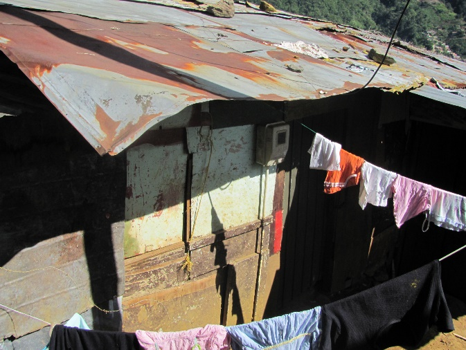
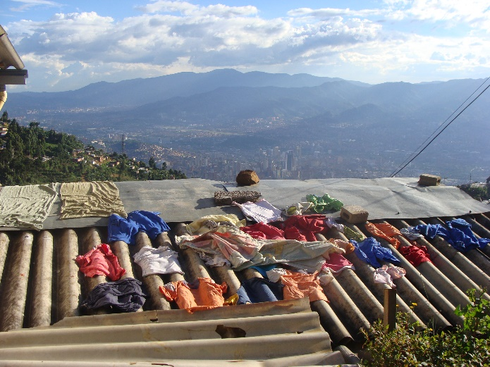

Estas imágenes me transportan a esos lugares, me hacen sentir calor, como si ese lugar fuera lo suficientemente caluroso para que me ponga ropa que me haga sentir fresco. Otro sentimiento que me generan estas imágenes es la preocupación porque me roben la ropa del techo aunque si esas personas la ponen ahí es porque son una comunidad lo bastante humilde y noble como para que eso no suceda.
A Veces deseo estar en esos lugares para poder ver la ciudad desde sus perspectivas, a pesar de que se les pueda llamar pobres cada vez que salen de sus casas y miran a la ciudad pueden sentir su inmensidad y a la vez todo lo que pasa en ella, son como unos espectadores.